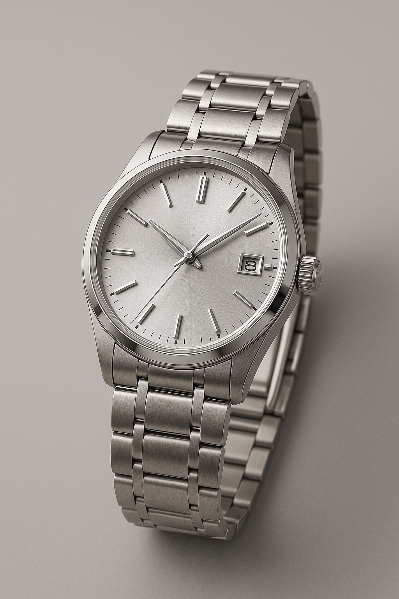
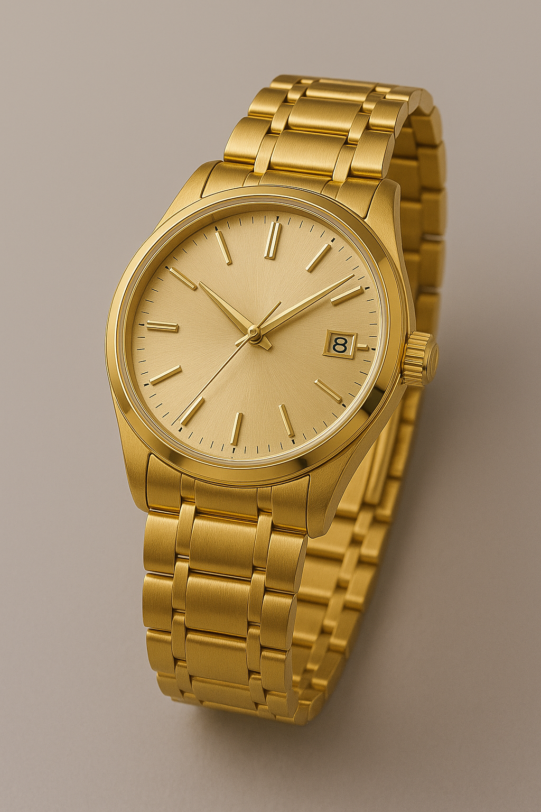
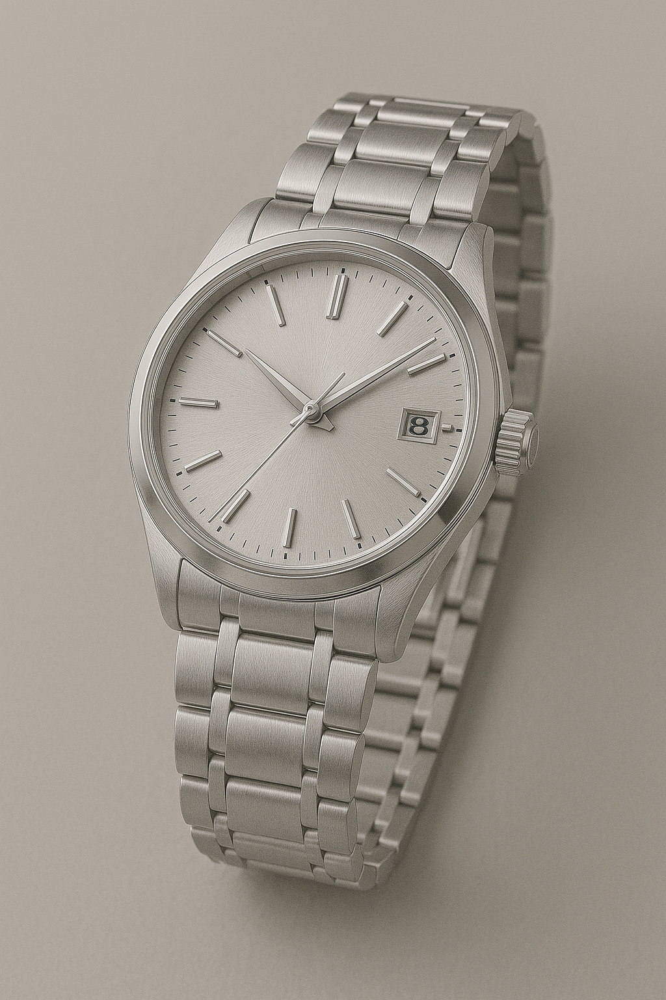

Silverarmbanduhr

Diese stilvolle Armbanduhr aus gebürstetem Edelstahl besticht durch ihr minimalistisches
Design und ein silbernes Sunburst-Zifferblatt.
Klare Linien, schlanke Zeiger und eine dezente Datumsanzeige verleihen ihr einen
zeitlosen, modernen Charakter – perfekt für den täglichen Gebrauch oder formelle Anlässe.
Goldarmbanduhr

Ein Symbol klassischer Eleganz – diese Armbanduhr in sattem Goldton vereint luxuriöses
Design mit raffinierter Schlichtheit.
Das fein gebürstete Gehäuse, das harmonische Zifferblatt und das massive
Gliederarmband unterstreichen ihren
edlen Auftritt und machen sie zu einem echten Statement-Piece.
Platinarmbanduhr

Die Platinversion strahlt Understatement und höchste Exklusivität aus.
Ihr kühler, matter Glanz und das makellos gearbeitete Armband spiegeln pure Präzision
und Handwerkskunst wider. Eine Uhr für Kenner, die Wert auf Qualität, Langlebigkeit und
diskrete Eleganz legen.